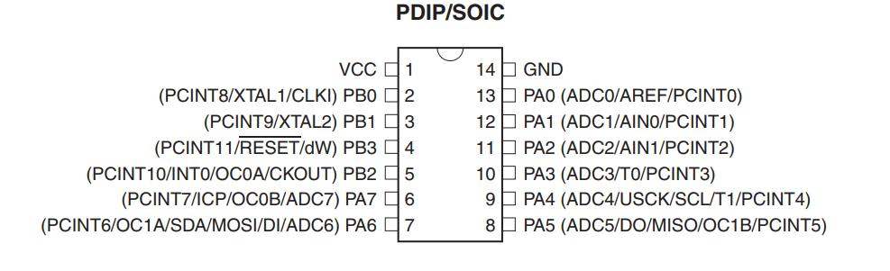

Since I did not mill my design as I did not have the time to do it and we broke almost all our drilling bits, so I will be using Mr Fransisco Sanchez board which consists of ATTINY84 that is connected to LED and a Push Button. So the first thing I did was downloading the makefile from "Input Devices" page, I used the makefile of the switch board and modified to input the C file I edited which is based on Mr Fransisco sketch of prefabacademy.
I edited the make file to be used with ATTINY44 instead of ATTINY45 as shown below:
PROJECT=switchLED
SOURCES=$(PROJECT).c
MMCU=attiny44
F_CPU = 1000000
CFLAGS=-mmcu=$(MMCU) -Wall -Os -DF_CPU=$(F_CPU)
$(PROJECT).hex: $(PROJECT).out
avr-objcopy -O ihex $(PROJECT).out $(PROJECT).c.hex;\
avr-size --mcu=$(MMCU) --format=avr $(PROJECT).out
$(PROJECT).out: $(SOURCES)
avr-gcc $(CFLAGS) -I./ -o $(PROJECT).out $(SOURCES)
program-usbtiny: $(PROJECT).hex
avrdude -p t44 -P usb -c usbtiny -U flash:w:$(PROJECT).c.hex
The program I edited is as shown below:
#define F_CPU 1000000UL
#include <avr/io.h>
#define setbit(register, bit) (register) |= (1 << (bit))
#define clearbit(register, bit) (register) &= ~(1 << (bit))
#define testbit(register, bit) (register) & (1 << (bit))
// This program turns LED ON when the button is pressed
int main (void)
{
DDRA |= (1 << PA7);
// set PB2 as output in DDRB
DDRA &= ~(1 << PA3);
// set PA3 as input in DDRA
PORTA = 0b00001000;
// SET PULL UP RESISTOR IN PA3
while(1) {
if (testbit(PINA,PA3))
PORTA = 0b00000000;
else
PORTA = 0b10000000;
}
}This program supposed to switch on/off the LED based on the push button condition, the LED connected to A7 pin while the button connected to A3 pin.
Then I tried to run the make file but I got this error "make: *** No rule to make target 'switchLED.c', needed by 'switchLED.out'. Stop. " Then I did some research and I found that I need to add the C extension to the C file I edited which is in this case switchLED, so I made it switchLED.c and it automatically converted to C file then I ran the make file and it uploaded the sketch without any issues.
However the result is not good as the button is very sensitive to motion or any movement of the board and I did not have enough time to debug it and it turned out that this was a board of one of the former students of Fransisco and it was not working.

After milling my Week 4 I am able to program it now! My board is based on ATTINY44 microcontroller, so I went to the datasheet of the attiny44 to understand more about this microcontroller. As seen in the below picture that is taken from the datasheet, the attiny44 has 14 pins.

According to the datasheet, attiny44 has 1 VCC pin, 1 ground pin, 4 pins for PORTB which is 4 bit I/O port (PB0 to PB3), and 8 pins for PORTA which is 8 bits I/O port (PA0 to PA7).
As I wanted my board to be as small as possible as it turned to be 23.2 mm by 24.3 mm only, I had to use the pins wisely. So similar to Neils Echo hello board, I used PB2 as output for the LED so the LED will be at left side of the board and the push button will be at the right side of the board to save as much space as possible. As PB0 and PB1 are used for the external resonator, 8 MHz for my case, and PB3 was used for the Reset, just like the original echo hello world board, I was left with PB2 or PA7 from the left side of the board, so I used PB2 as the output to control the LED.
As my board contains button and LED, the push button is connected to PA3 as PA4 and PA5 are used for the ISP connector. I used the internal pull-up resistor of PA3 for the push button as PORTA pins has internal pull-up resistors and can be activated via the code as I will explain that in the code itself. This minimize the required components thus the board size as I don't need to add external resistor for the push button.
| Component | Pin |
|---|---|
| LED | PB2 |
| Push Button | PA3 |
The below picture is snapped from the datasheet of attiny44:

As seen in the above picture, to activate the internal pull-up resistor of PA3 I needed to set it as input first and write 1 at PA3. I learned how to set bit and clear bit from the prefabacademy of Fransisco
These are the required hardware configurations for the pins to be as inputs, outputs, high and low. I made the below table for configuring the pins in C language as Fransisco showed us:
| Command | Function |
|---|---|
|= |
set bit |
&= ~ |
Clear bit |
DDRX |= (1 << PXn); |
set the "n" pin in the X port as output, X can be port A or port B, n ranges from 0 to 7 |
DDRX &= ~(1 << PXn); |
set the "n" pin in the X port as input, X can be port A or port B, n ranges from 0 to 7 |
PORTX = 0bnnnnnnnn; |
write n ( 0s "Low" or 1s "HIGH") at the assigned pins in the assigned port (A or B) |
PORTX &= ~(1 << PXn) |
set bit, write 0 "Low" at a specific pin n of a specific port X |
PORTB |= (1 << PB2); |
clear bit, write 1 "High" at a specific pin n of a specific port X |
PINA &(1<< PA3) |
test bit if it is High |
Then I wrote a program that simply siwtch on the LED if the button is pressed.
// Hashim Al Sakkaf
// FabLab UAE @2017
// Creative Commons Attribution 4.0 International License.
#include <avr/io.h>
int main (void)
{
DDRB |= (1 << PB2);
// set PB2 as output (LED)
DDRA &= ~(1 << PA3);
// set PA3 as input (Buttun)
PORTA |= (1 << PA3);
// Activate Pull-up resistor at PA3
while(1) {
if (PINA &(1<< PA3))
{
//if button pressed
PORTB &= ~(1 << PB2);
// set PB2 low = switch on LED
}
else
{
PORTB |= (1 << PB2);
// set PB2 high = switch off LED
}
}
}The below video shows the board in action: